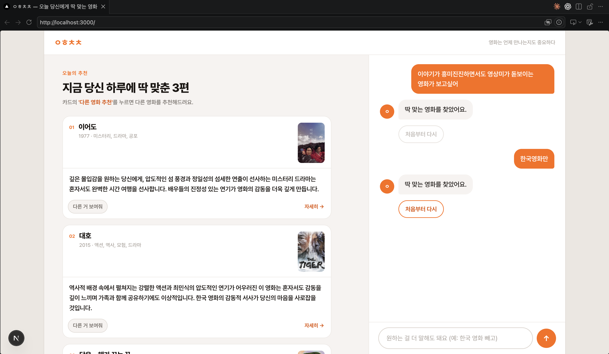

상황·감정·연출요소·인지부하 4가지 축으로 OTT 영화를 정밀 추천하는 웹 서비스. RAG → LangChain → LangGraph로 진화하며, 사용자의 세밀한 감정 요구를 대화형으로 타겟팅합니다.

기존 영화 추천(협업 필터링, 콘텐츠 유사도)은 "무엇을 볼지 고르는 데" 과도한 인지 부하를 야기합니다. ㅇㅎㅊㅊ은 이 페인포인트를 해결하기 위해 탄생했습니다.
핵심 가설: 사용자가 영화를 찾을 때 진정으로 원하는 것은 "특정 상황에서 느끼고 싶은 감정"입니다. 이를 정밀하게 타겟팅하기 위해 상황(Situation)·감정(Emotion)·연출요소(Direction)·인지부하(Cognitive Load) 4가지 축(4 Pillars)으로 벡터 연산합니다.
기술 진화: RAG 복습으로 시작 → LangChain 프로토타입 → 서비스 목적에 맞춰 LangGraph 대화형 워크플로우로 전환. 사용자의 모호한 질문을 정제된 벡터 쿼리로 변환하는 지능형 라우팅을 구현했습니다.
파이프라인 흐름: TMDB API / 왓챠 크롤링 → 감독명+연도 매칭 검증 및 전처리 → LLM 기반 4-Pillar 속성 태깅 → LangGraph 기반 추천 라우팅 → 사용자 맞춤형 OTT 영화 추천 결과
RAG → LangChain → LangGraph 진화: 초기 RAG로 시작했으나 복합한 사용자 요구사항을 처리하기 위해 LangChain 프로토타입 거쳐 최종적으로 LangGraph의 상태 머신 기반 대화형 워크플로우로 확정. (상세 파이프라인 다이어그램은 개발 중)
1,930개의 영화 DB 구축: TMDB 및 왓챠 데이터를 통합하면서 동명 영화 인식 오류와 연도 불일치 문제를 연도+감독명 다중 교차 검증으로 해결. 안정적이고 일관성 있는 20개 컬럼 DB 완성.
LLM 기반 태깅 품질 고도화: 노이즈 섞인 원문 리뷰 임베딩 → LLM 구조화 태깅 프로세스로 전환. "우울할 때 위로받고 싶어", "생각 없이 웃고 싶어" 같은 세밀한 감정 요구에 안정적인 추천 결과 도출.
LangGraph 워크플로우 완성: 사용자가 어떻게 서비스를 쓸지 모든 테스트 케이스를 손으로 시뮬레이션한 후 LangGraph 상태 머신으로 구현. 복합한 대화형 로직을 수렴성 있게 처리.
DB 스키마의 중요성을 뼈저리게 깨달았습니다. 처음에 명확한 분류 기준 없이 시작했다가, 데이터 전처리와 수집 단계를 반복적으로 되돌아가야 했습니다. "처음 아키텍처가 얼마나 중요한가"를 몸으로 체험했고, 이제는 설계 단계에서 데이터 기준을 확실히 수립하는 것의 가치를 알게 되었습니다.
LLM과의 협업 방식을 터득했습니다. Prompt Engineering, 코드 리뷰 등 Claude와의 긴밀한 협업 프로세스가 얼마나 효율적인지 체험했습니다. 특히 복잡한 LangGraph 구조 설계 시 "사용자 시나리오를 먼저 손으로 그린 후 LLM에게 구현을 맡기는" 방식의 힘을 느꼈습니다.
RAG의 한계와 대안을 찾았습니다. 원문 리뷰를 그대로 임베딩하는 RAG 방식에서는 긍정/부정이 혼재되어 품질이 오락가락했습니다. LLM을 활용해 먼저 구조적 태깅을 거친 후 벡터 연산하는 방식이 결과의 예측 가능성과 품질을 크게 향상시킨다는 것을 배웠습니다.
AI 엔지니어로서의 자신감을 얻었습니다. 기획부터 배포까지 전 과정을 단독으로 진행하며, 방대한 텍스트 데이터 속에서 핵심 인사이트를 구조화하여 비즈니스 가치로 연결하는 경험을 쌓았습니다.